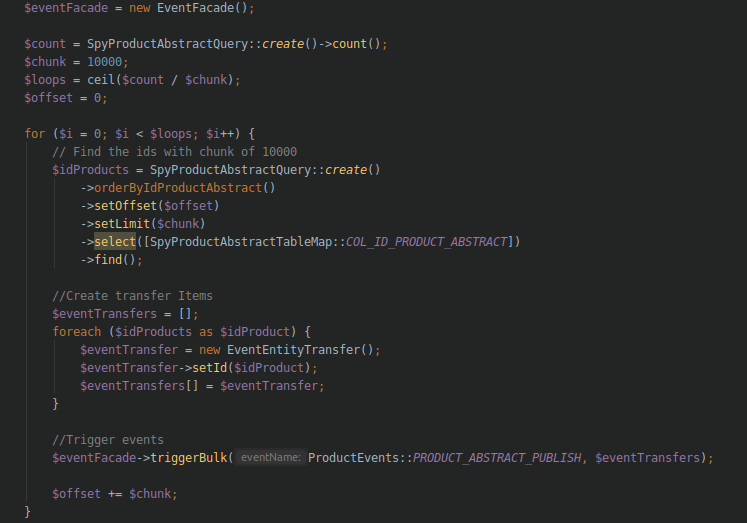
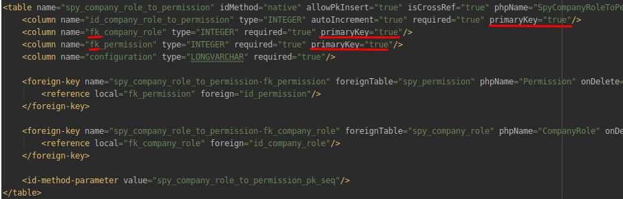

Making use of New Relic to tackle Spryker Performance Issues
Created by Nexus United
Nexus Intro
- ~104 Employees
- ~15 active spryker projects
- Located in Langenfeld, Siegen und Romania
Project Intro
- MVP ~3 month
- Release ~1 year
- ~1200 JIRA Tickets
- 28 Contributors (git)
Project Intro
- 470.794 Products
- Customer specific prices and availability
- ~3000 orders per day average
- ~1900 Customers
- ~60.000 daily page views
Server setup
| SERVER | CPU | RAM |
|---|---|---|
| yves | 8 | 8 |
| zed | 4 | 4 |
| db | 12 | 8 |
| elastic | 2 | 4 |
| redis | 2 | 24 |
| rmq | 2 | 2 |
| jenkins | 2 | 2 |
Release & Performance

Inspections
....
xdebug.profiler_enable=1

Inspections
Inspections
- Enable NewRelic APM + Infrastructure Trial
- Add to project
- Talk with hoster to install on all servers
No data in NewRelic
newrelic.framework auto-detect (should it be)
Inspections
.png)
Issue
Slow login due third party session creation
Extracted to async process
Issue
Slow data importers
Increased RMQ parallel workers

WIP: Remove facade calls and use propel directly
Issue
Slow P&S process and wrong data
Replace plugins and trigger in bulk

Issue
Slow Database and too many Database calls
EXPLAIN ANALYSE SELECT * FROM spy_company_role_to_permission WHERE fk_company_role = 562765;

# ...cost=0.00..19032.90....
Issue
Adjust index generator to generate index for composite PKs
EXPLAIN ANALYSE SELECT * FROM spy_company_role_to_permission WHERE fk_company_role = 562765;
# ...cost=0.00..24.12....
Conclusion
- Spryker help (support.spryker.com)
- Spryker community slack (slackcommunity.spryker.com)
- xDebug and NewRelic profiling (xdebug.org/docs/profiler, newrelic.com)
- Improve Performance = Measure & Change
Thanks